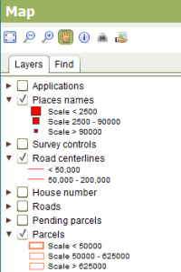

The Layers tab identifies the layers of geospatial data that can be displayed in the map. You can show or hide these layers by checking or clearing the checkbox next to the layer name.

SOLA Map Viewer Layers Tab
By clicking the triangle beside each layer name you can also see the symbology used to illustrate the geospatial data at different map scales. For example, when the map scale is below 2,500, Place names will be illustrated with a large red square. Between 2,500 and 90,000 a medium red square is used and above 90,000 a small red square. Using the map scale to control the layer symbology ensures the map does not become overly crowded with detail which might otherwise impair navigation or comprehension of the information displayed by the map.
The layers available for SOLA include
|
Points that indicate the approximate location of applications that have been lodged in SOLA. Application points can be created using the Map Points tab when capturing details for a new application. |
|
Illustrates the approximate location of notable geographic features such as towns, headlands and bays. |
|
Illustrates the location of survey control (i.e. geodetic) marks. |
|
Shows the location of road centrelines. The centreline is used to position road names on the map. |
|
Displays the house number or street number of each parcel |
|
Shows the location of roads. |
|
New parcels that have been created by a survey subdivision or amalgamation. These parcels remain pending until the application that created them is approved. |
|
Illustrates the location of current parcels. |
|
This layer shows parcels that have been subdivided or amalgamated into new parcels, but still have current title references. |
|
Illustrates the location of current parcel nodes. |
|
Aerial photograph(s) that have been corrected for lens distortion, camera tilt and topography to ensure they have a uniform scale and are suitable for map display. |
|
Zones and administrative boundaries including those relevant to systematic
registration. |
Orthophoto layer